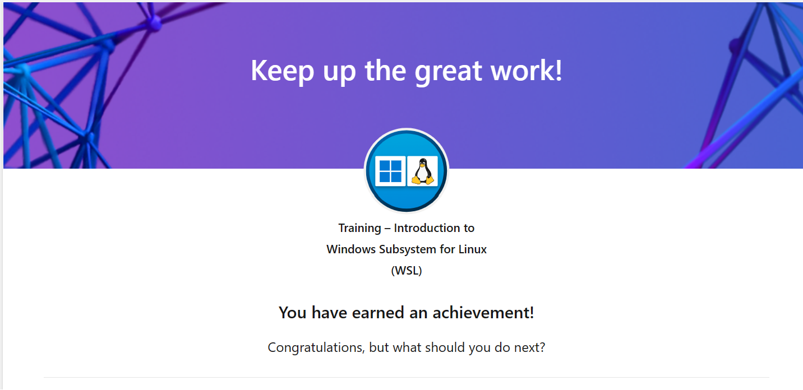
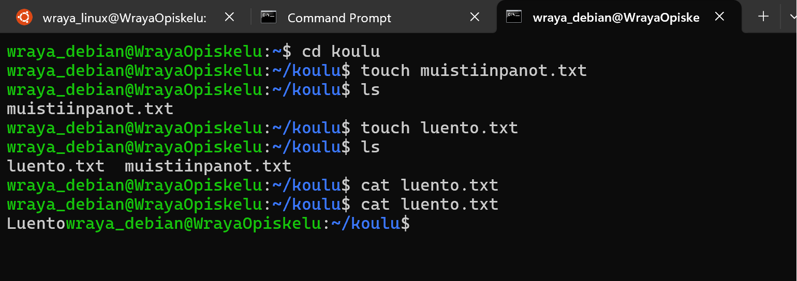
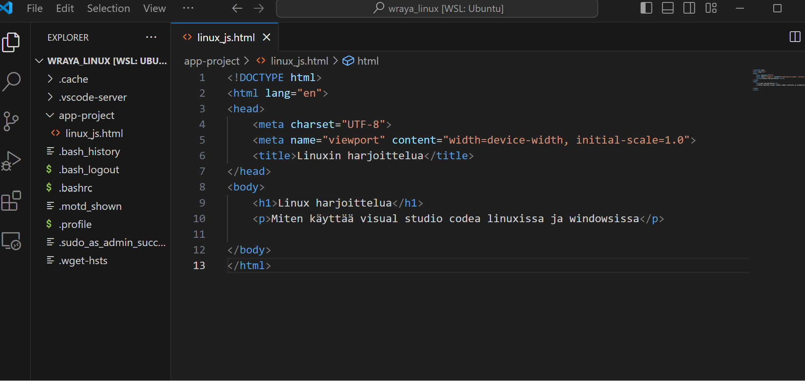
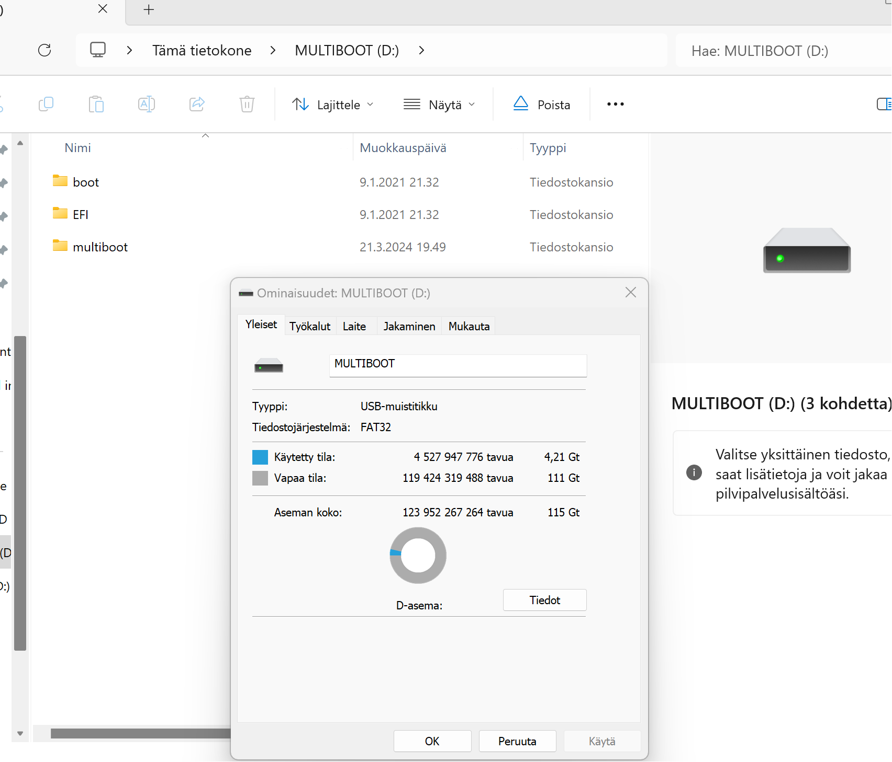
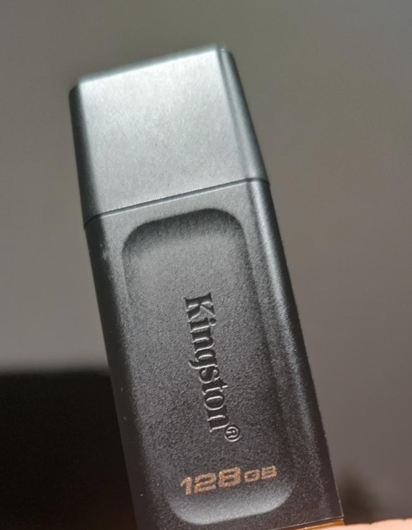

Yleiskokemus käyttöjärjestelmän käyttämisestä pilvipalveluiden kautta
Tykkään enemmän virtuaalikoneista. Onworksin-pilven kautta käyttäminen ei ollut kovin onnistunut kokemus, varsinkaan ilmainen versio, jossa mainokset ärsyttivät jo heti alkuun. Pilvipalveluiden kautta käyttöjärjestelmän kautta tuntui myös hitaammalta kuin esim. virtuaalikoneella. Toki syynä voi olla ongelma nettiyhteydessä.
Myös se ärsytti tässä ilmaisessa, kokeiluversiossa, että jos oli vähänkään pidempää aikaa käyttämättä, niin onworks-sivusto heitti ulos esim. Ubuntu MATEsta ja jouduin taas katselemaan mainoksia.
Kokeilin pilvipalveluiden kautta https://www.onworks.net/os-distributions/ubuntu-based Ubuntu Mate -distroa ja Fedora-distroa.
Ubuntu MATE (onworks.net)
UbuntuMATE tuntui näin lyhyen kokeilun jälkeen perus-Widows käyttäjälle ihan intuitiiviselta. Ohjelmien avaaminen, uusien ohjelmien asennus, esim. desktop games, ja erilaisten asetusten säätäminen onnistui. UbuntuMATE oli aloittelijoille ja minullekin suositeltujem distrojen joukossa.
Fedora (onworks.net)
Fedoran kokeileminen tuntui kaikkien eri järjestelmien jälkeen aika helpolta ja samalta. (luonnollisestikaan, mitään surffailua, värien säätämistä ja muutaman ohjelman lataamista monimutkaisempaa en tehnyt... xD)
Software-kaupasta silmiin osui sukupuu-ohjelma erilaisia ohjelmia selaillessa ja sillä ehkä voisi leikkiä jossain vaiheessa
B) Linuxin käyttö Windowsissa WSL-työkalun kautta
Introduction to Windows Subsystem for Linux -kurssi oli todella hyvä ja selkä johdatus WSL:n käyttämiseen ja komentorivin hakuihin. Minulla ei ole kokemusta WSL:stä, ja hyvin, hyvin vähän kokemusta komentorivin käytöstä, mutta pystyin hyvin askel askeleelta seuraamaan kurssin ohjeita.
Asennus oli suhteellisen selkeä ja helppo, kun noudatti Microsoftin kurssin ohjeita. Oma kone toki päätti taas uudelleenkäynnistyksen yhteydessä jumahtaa ja jouduin etsimään recovery keyn. Mutta sen jälkeen asennus meni loppuun asti ihan nätisti ja hyvin. Harjoitusten jälkeen komentorivin käyttökään ei pelota enää niin paljon ja uskon, että pystyn ehkä oppimaan käyttämään sitä.
Ohessa kuvakaappaukset kurssin suorittamisesta ja Test your knowledge-vastauksista.

WSL-Linux komentorivillä ja Visual Studio Codessa
Asensin WSL:n kautta Ubuntun (wraya_linux) ja Debianin (wraya_debian). Opin myös luomaan kansioita ja tiedostoja komentorivin kautta, mitä en ennen osannut. :)

Visual Studio Code avattuna WSL:n kautta. Koodia ei ole juurikaan kirjoitettu, kun en keksinyt, mitä siihen nyt tekisin.

C) Linux USB-tikulle
Päätin kokeilla Kali Linux -jakelun lataamista USB-tikulle. Tällä hetkellä tietoturvaosaaminen vaikuttaisi todella kiinnostavalta ja olen toiveikas, että jollain tulevalla kurssilla voisi päästä harjoittelemaan ja testaamaan, niin Kalista voisi silloin olla hyötyä.
USB-tallentamisen kanssa minulla oli kyllä haasteita, sillä olen aavistuksen uuno näiden kanssa. Latailin ensin Yumin exFat-version ja Kali Linuxin levykuvan. Asennukset itsessään eivät olleet vaikeita.
Mutta kun yritin läppärillä vaihtaa käynnistyksessä ladattavan käyttöjärjestelmän, niin kone ilmoitti, että blokattu.
Luin jostain ohjeen, että pitää erikseen vielä ladata GPG (GNU Privacy Guard) -tietoturvatyökalun, jonka avulla voi varmentaa, hallita avaimia ja salata.
Tällä ei luonnollisesti ollut mitään vaikutsuta, mutta tulipahan varmennettua, että ladattu Kali oli aito. Aitouden varmistamisella ei ollut vaikutusta, vaan edelleen läppäri ilmoitti biosin vaihtamisen yhteydessä, että blokattu. Niinpä pohdin, että ehkä olen ladannut väärän ohjelmat ja kokeilin ladata Yumin UEFI-version, joka oli Yumin sivuilla arkistoituna. Mutta luonnollisestikaan myöskään tämän kanssa ei onnistunut, vaan edelleen läppäri ilmoitti, että ei. Tässä vaiheessa aloin jo miettimään, että ehkä kyse voisi olla jostain muusta kuin siitä, että itse olen tehnyt jotain väärin tai ladannut jonkun väärän version. Googlailun jälkeen näytti siltä, että läppärissä voinee olla joku suojaus, joka estää käytön ja joka pitäisi laittaa pois päältä. Suojaustyökalut voivat ehkä pitää USB-tikulla olevaa Kalia haittaohjelmana, koska siellä on monia työvälineita haittaohjelmiin liittyen...
En halunnut lähteä muokkailemaan näin amatöörinä oman läppärin suojauksia, joten päätin kokeilla pöytäkoneella, joka on vanha ja raihnainen, ja vain perussuojaus.
Ja nyt vihdoin pääsin käynnistämään Kali Linuxin UBS-tikulta. Ainoa ongelma oli se, että en päässyt kirjautumaan omaan sähköpostiin (minulla on käytössä vahva tunnistautuminen ja tunnistautumiskoodin tulemisessa kännyykkään kesti niin kauan...) ja lähettämään kalissa otettu näyttökuvia. Tässä muutama puhelimella otettu huonolaatuinen kuva USBin kautta käynnistetystä Kali Linuxista.
En tiedä, näyttääkö tiedostojärjestelmä pöytäkoneella olevat tiedostot tuossa toisessa ikkunassa. Toisessa ikkunassa ehkä Kalin tiedostot.
Eli summa summarum, USB-tikun luominen oli helppoa, mutta muu säätäminen ehkä vaatisi syvempää osaamista kaikesta. Nyt tein ilmeisesti monta turhaa steppia, kuten GPG:n lataaminen, tiedoston tarkistaminen, Yumin-ohjelman vaihto vanhempaan versioon... Ja vieläkään en tiedä, mitä pitäisi tehdä, että saisin läppärissä käynnistettyä Kali Linuxin USB-tikun kautta ja miten saisin tuon eston pois.
Tässä vielä UBS-tikun tiedot: Kingston Techonology 128 GB USB 3.2.

D) Linuxin asentaminen Windowsin rinnalle
En aio edes yrittää, sillä jo muiden asennusten kanssa on tullut pieniä jumeja. Jos yrittäisin asentaa Linuxin Windowsin rinnalle, niin ole 99% varma, että saisin heittää koneelle hyvästit. Eikä minulle ole mitään ylimääräistä uhrattavaa konetta. Mieli tekisi testata, mutta oma osaaminen ei riittäisi ratkomaan niitä kaikkia ongelmia, joita Linuxin asentaminen Windowsin rinnalle todennäköisesti aiheuttaisi.